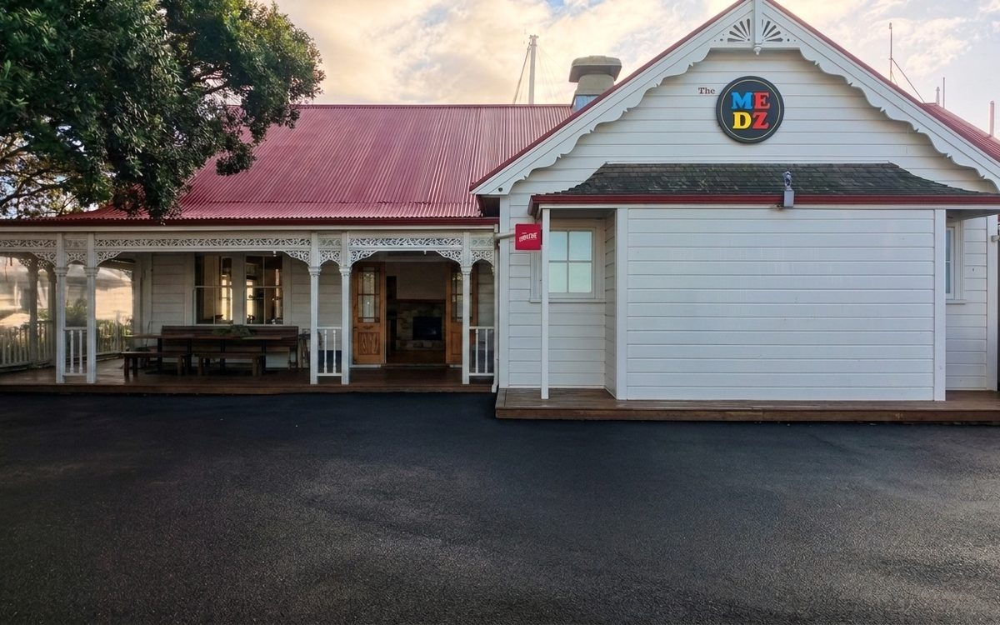

Hospitality · Concept demo
· Live demo
The Medz Cafe Demo
"Most restaurant websites show you photos. This one walks you through the front door."
Step inside the demo
medz-demo.netlify.app

01 — The idea
The demo opens on a real cafe from across the carpark. As you scroll, the camera moves — across the asphalt, up to the doors, through the entrance, and up to the bar — one continuous, unbroken journey controlled entirely by your fingertip. It ends where every good visit ends: at the counter, with the menu in hand. And the menu is a book — pages that lift, curl and turn like the real thing.
02 — How it was made
The whole journey is built from four real photographs, taken on site in one visit. The movement between them is AI-generated video — each transition starts on one photograph, pixel for pixel, and ends on the next, so the sequence reads as a single camera move. No film crew, no gimbal, no drone. The result is a fully static site: fast, cheap to run, works everywhere.
03 — What's in it
Everything a restaurant site needs, made into an experience rather than a brochure.
- Scroll-driven cinematic walk-in
- AI camera moves between real photos
- Page-turn flipbook menu
- Full table-booking flow (demo)
- Static files — fast on any device
- Built from one photo session
04 — The point
Any venue can have this — from a single visit with a camera.
First impressions do the selling. Visitors don't read about the atmosphere — they experience walking into it. Cafe, restaurant, salon, venue: if people come through your door, this is what your website could be doing.
Want your customers to walk in from their phone?
Free 30-minute consult. No pitch, no jargon — just a conversation.